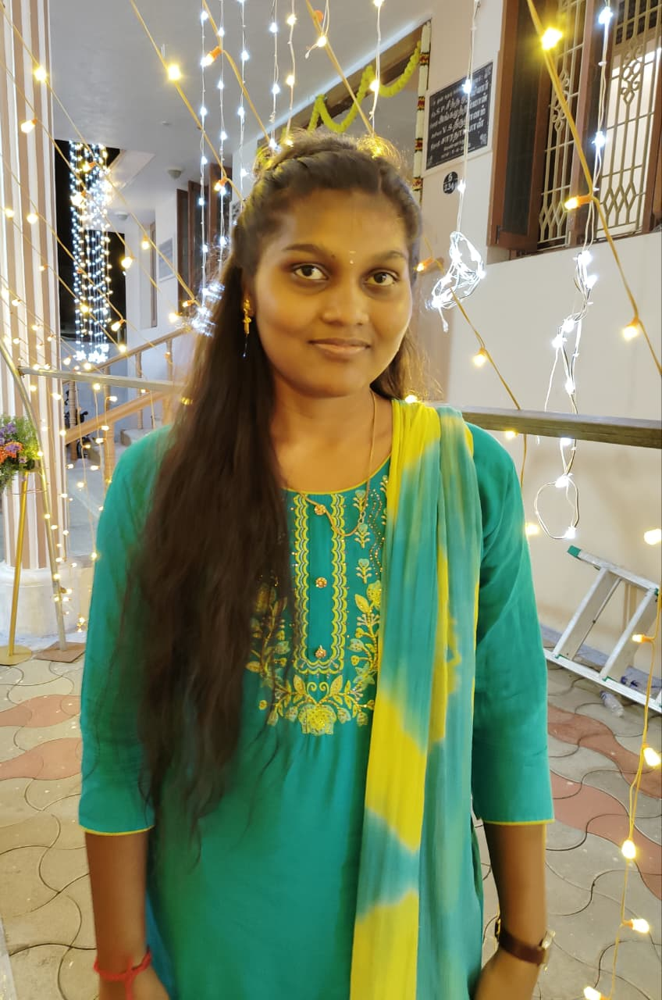

Final-year B.Tech Information Technology student skilled in Python, NLP, Machine Learning and Data Analytics.

I am a final-year B.Tech Information Technology student at Government College of Engineering, Erode.
I am interested in Artificial Intelligence, Data Science, NLP, Machine Learning and Data Analytics. I enjoy building practical projects that solve real-world problems using technology.
I have developed AI-based study assistants, plant disease prediction systems and web-based management applications. I am currently seeking an entry-level Data Analyst or Data Science opportunity.
To begin my career in Data Analytics / Data Science and apply my technical knowledge to real-world problems.
Python
Java(basic)
HTML / CSS
JavaScript
NLP
Gemini API
TensorFlow
OpenCV
Data Pre-processing
Model Evaluation
Power BI
Jupyter Notebook
Google Colab
Streamlit
Git / GitHub
OOP
SQL
Data Structures
Computer Networks
Operating Systems
Python • NLP • Streamlit • Gemini API
Developed an AI-powered study assistant that answers queries and summarizes concepts using NLP and Gemini API.
Designed an interactive Streamlit interface that allows students to personalize their learning sessions.
Jan 2026Python • OpenCV • TensorFlow
Built an AI-based system to detect plant diseases from leaf images using image processing and machine learning.
Pre-processed leaf-image datasets and trained models to recognize disease patterns for early detection.
Aug 2025PHP • MySQL • HTML • CSS • XAMPP
Developed a full-stack web-based travel management platform for managing travel records and reservations.
Implemented booking and cancellation workflows with a MySQL-backed database.
Aug 2024Worked on live AI and Data Science projects involving data preprocessing, machine learning and model evaluation using Python.
Applied Python to solve real-world data problems and gained practical experience with the end-to-end model development workflow.
Secured 1st Place in Discus Throw at the District-Level School Athletics Championship.
Served as Secretary of the Women Development Cell (WDC), coordinating college events, cultural programmes and competitions.
CGPA: 8.0 / 10
I am open to entry-level opportunities in Data Analytics, Data Science and AI.
📱 Phone: +91 82201 74412
📧 Email: ranjanis1225@gmail.com
💼 LinkedIn: LinkedIn Profile
💻 GitHub: GitHub Profile
📍 Tamil Nadu, India